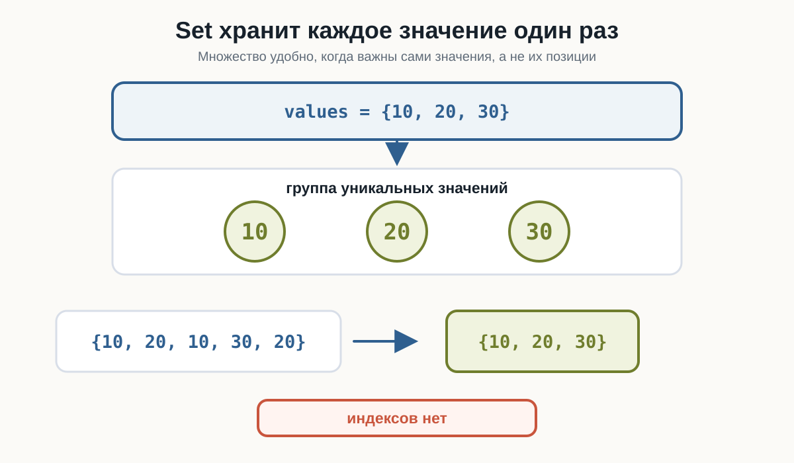
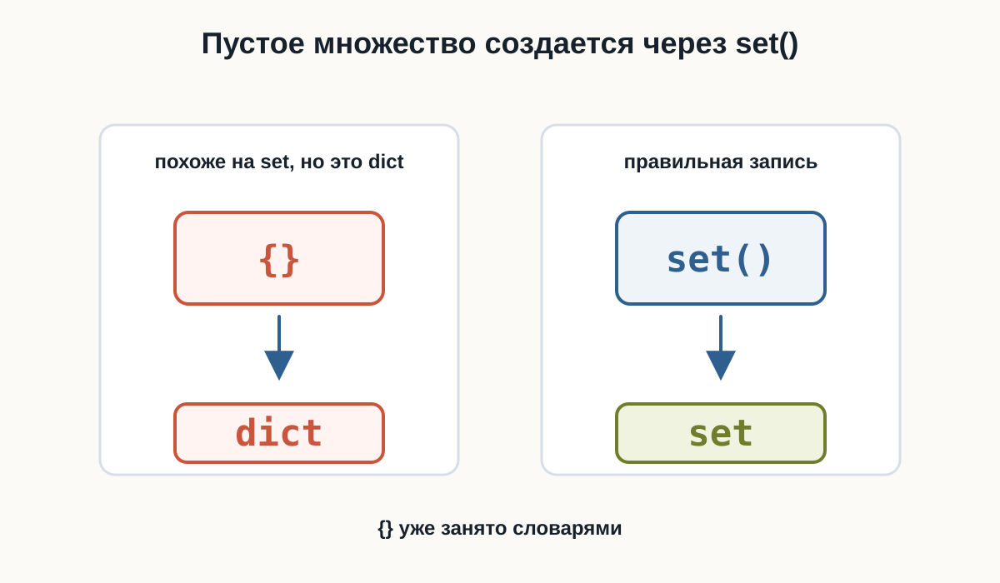
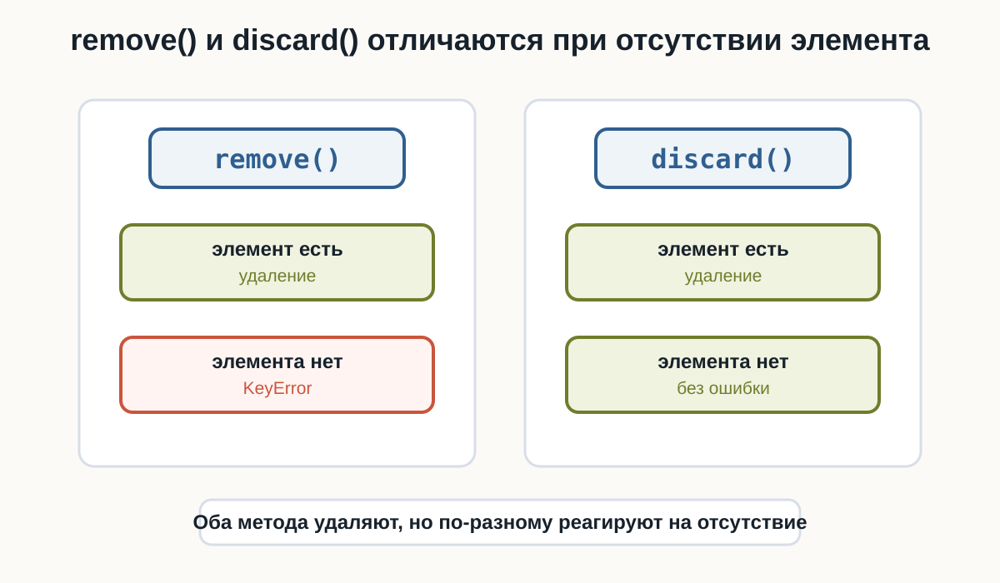
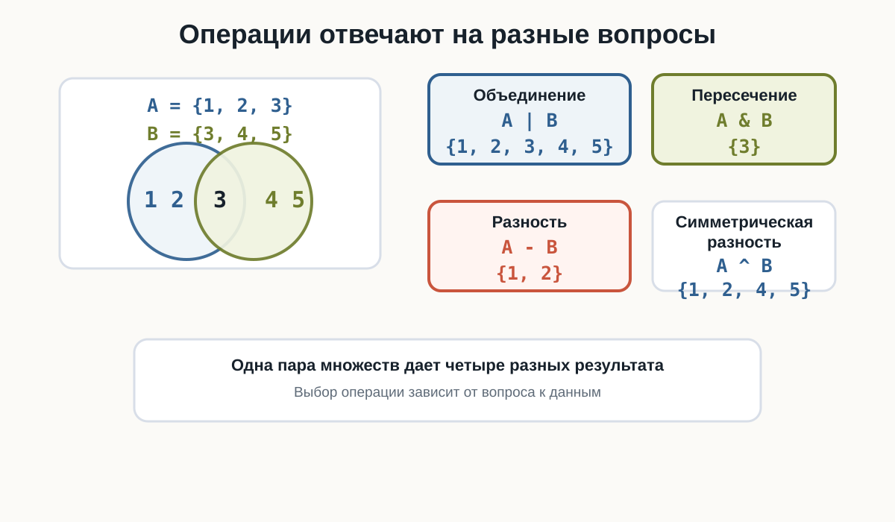
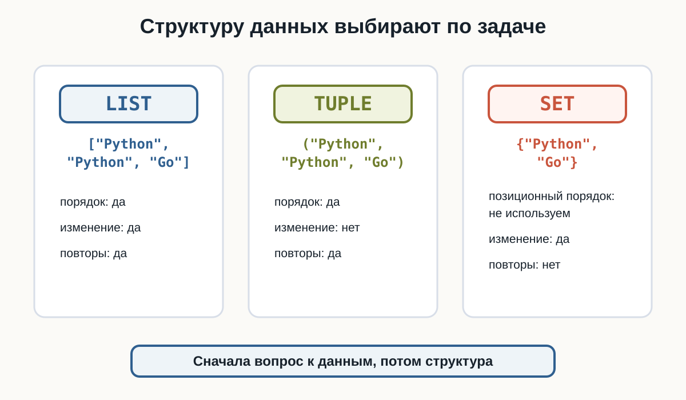

4.2 Множества
Python множества, set Python, множества Python для начинающих, уникальные значения Python, удалить дубликаты Python, union Python, intersection Python, difference Python
Главный вопрос главы:
Как хранить уникальные значения и выполнять операции над группами данных?
В предыдущей главе мы познакомились с кортежами:
point = (10, 20)Кортеж сохраняет порядок элементов и подходит для фиксированного набора значений.
Теперь рассмотрим другую задачу.
Представим список языков:
languages = ["Python", "Java", "Python", "Go", "Java"]Некоторые значения повторяются.
Если нас интересует только то, какие языки присутствуют, а количество повторений не имеет значения, удобно использовать множество:
languages = {"Python", "Java", "Go"}В Python множества имеют тип set.
Что такое множество
Множество — коллекция уникальных элементов.
Создадим первое множество:
languages = {"Python", "Java", "Go"}
print(languages)
print(type(languages))Тип:
<class 'set'>Главное свойство видно на примере:
numbers = {10, 20, 10, 30, 20}
print(numbers)В множестве останутся только уникальные значения:
10
20
30Повторные 10 и 20 не создают дополнительные элементы.

Не следует рассчитывать на определённый порядок элементов set.
Например, множество:
{"Python", "Java", "Go"}при выводе может отображаться не в том порядке, в котором значения были записаны.
Если порядок данных важен, нужно выбрать другую структуру.
Создание множества
Множество с элементами можно создать с помощью фигурных скобок:
numbers = {10, 20, 30}Строки:
languages = {"Python", "Java", "Go"}Логические значения:
answers = {True, False}В одном set технически могут находиться значения разных типов:
values = {10, "Python", True}Но на практике понятнее, когда множество представляет одну группу однородных по смыслу данных.
Пустое множество
Здесь есть важная особенность.
Такая запись:
items = {}не создаёт множество.
Проверим:
items = {}
print(type(items))Результат:
<class 'dict'>С фигурными скобками без элементов Python создаёт словарь.
Для пустого множества используется:
items = set()Проверим:
items = set()
print(items)
print(type(items))Результат:
set()
<class 'set'>{}— пустой словарь.
set()— пустое множество.
Это различие важно запомнить.

Создание set из другой коллекции
Функция set() умеет принимать другую коллекцию.
Например, список:
numbers = [10, 20, 10, 30, 20]
unique_numbers = set(numbers)
print(unique_numbers)Повторения исчезнут.
То же можно сделать со строками:
letters = set("banana")
print(letters)В результате множество будет содержать уникальные символы строки.
Это один из самых распространённых способов применения set: получить уникальные значения из существующих данных.
Сколько уникальных значений
После преобразования можно использовать len():
cities = ["Москва", "Казань", "Москва", "Омск", "Казань"]
unique_cities = set(cities)
print(len(unique_cities))Результат:
3Таким способом можно узнать количество различных значений.
Проверка элемента
Множества хорошо подходят для проверки наличия значения.
Используется уже знакомый оператор in:
allowed_roles = {"admin", "editor", "moderator"}
print("admin" in allowed_roles)
print("guest" in allowed_roles)Результат:
True
FalseМожно использовать условие:
role = "editor"
if role in allowed_roles:
print("Роль разрешена")Для проверки отсутствия используется not in:
if "guest" not in allowed_roles:
print("Такой роли нет")У множества нет индексов
У списка можно получить элемент по позиции:
languages = ["Python", "Java", "Go"]
print(languages[0])У множества такой операции нет:
languages = {"Python", "Java", "Go"}
print(languages[0])Этот код приведёт к:
TypeErrorПричина проста: set не предназначен для работы с позициями элементов.
Поэтому для множества нет смысла спрашивать:
какой элемент первый?
какой элемент последний?
что находится по индексу 2?Если такая информация нужна, set — скорее всего, не та структура данных.
Добавление элемента
Для добавления используется метод:
add()Например:
skills = {"Python", "Git"}
skills.add("SQL")
print(skills)Теперь множество содержит:
Python
Git
SQLЕсли добавить существующее значение:
skills.add("Python")второй "Python" не появится.
Это естественное следствие уникальности элементов set.
Удаление через remove()
Метод remove() удаляет указанное значение:
blocked_users = {"alex", "maria", "john"}
blocked_users.remove("maria")
print(blocked_users)Но есть важная деталь.
Если элемента нет:
blocked_users.remove("anna")возникнет:
KeyErrorПоэтому remove() удобно использовать, когда мы уверены, что значение присутствует.
Удаление через discard()
Метод discard() тоже удаляет значение:
blocked_users = {"alex", "maria", "john"}
blocked_users.discard("maria")Главное отличие проявляется, если элемента нет:
blocked_users.discard("anna")Ошибки не будет.
Сравним:
| Метод | Элемент существует | Элемента нет |
|---|---|---|
remove() |
удаляет | KeyError |
discard() |
удаляет | ничего не происходит |

Используйте:
remove()если отсутствие элемента само по себе означает проблему.
Используйте:
discard()если нужно просто убедиться, что значения больше нет.
Метод pop()
У множества есть метод:
pop()Он удаляет и возвращает произвольный элемент:
values = {"Python", "Java", "Go"}
removed = values.pop()
print("Удалено:", removed)
print(values)Не следует использовать pop() в расчёте на удаление «первого» или «последнего» элемента.
У set нет такого позиционного смысла.
Очистка множества
Чтобы удалить все элементы, используется:
clear()Например:
active_filters = {"python", "junior", "remote"}
active_filters.clear()
print(active_filters)Результат:
set()Сам объект множества остаётся, но становится пустым.
Перебор множества
Множество можно перебирать циклом for:
technologies = {"Python", "Docker", "Git"}
for technology in technologies:
print(technology)Каждый элемент будет обработан один раз.
Но порядок обхода не следует считать фиксированным.
Поэтому такой код подходит, когда важны сами элементы:
Python
Docker
Gitа не их позиции.
Объединение множеств
Теперь начинается одна из самых полезных возможностей set.
Есть две команды разработчиков:
backend = {"Python", "PostgreSQL", "Docker"}
devops = {"Docker", "Linux", "Kubernetes"}Нужно получить все технологии, встречающиеся хотя бы в одной команде.
Используем оператор:
|all_technologies = backend | devops
print(all_technologies)Получится множество примерно такого содержания:
Python
PostgreSQL
Docker
Linux
KubernetesDocker встречался в обоих множествах, но в результате присутствует один раз.
Операция называется объединением.
То же самое можно записать:
backend.union(devops)Пересечение множеств
Теперь найдём технологии, которые используются обеими командами.
Оператор:
&Пример:
backend = {"Python", "PostgreSQL", "Docker"}
devops = {"Docker", "Linux", "Kubernetes"}
common = backend & devops
print(common)Результат:
DockerЭто пересечение множеств.
Другой вариант записи:
backend.intersection(devops)Смысл:
A & B
↓
значения, которые есть и в A, и в BРазность множеств
Иногда нужно узнать, какие значения присутствуют в одном множестве, но отсутствуют в другом.
Используется:
-Например:
backend = {"Python", "PostgreSQL", "Docker"}
devops = {"Docker", "Linux", "Kubernetes"}
only_backend = backend - devops
print(only_backend)В результате останутся:
Python
PostgreSQLDocker исключается, потому что присутствует и в devops.
То же самое:
backend.difference(devops)Направление разности имеет значение
Сравним:
backend - devopsи:
devops - backendЭто разные вопросы.
Первый:
Что есть в backend, но нет в devops?Второй:
Что есть в devops, но нет в backend?Например:
backend = {"Python", "PostgreSQL", "Docker"}
devops = {"Docker", "Linux", "Kubernetes"}
print(backend - devops)
print(devops - backend)В первом результате будут Python и PostgreSQL, во втором — Linux и Kubernetes.
Симметрическая разность
Есть ещё одна полезная операция:
^Она оставляет значения, которые встречаются только в одном из двух множеств.
first = {"Python", "Git", "Docker"}
second = {"Python", "SQL", "Docker"}
difference = first ^ second
print(difference)Общие значения:
Python
Dockerне попадут в результат.
Останутся:
Git
SQLЭту операцию называют симметрической разностью.
На начальном этапе достаточно понимать её как:
элементы, которые не являются общими.
Четыре операции рядом
Пусть:
a = {1, 2, 3}
b = {3, 4, 5}Тогда:
a | bдаёт все уникальные значения:
{1, 2, 3, 4, 5}a & bдаёт общие:
{3}a - bдаёт значения только из a:
{1, 2}a ^ bдаёт значения, которые не являются общими:
{1, 2, 4, 5}Удобная памятка:
| Операция | Оператор | Вопрос |
|---|---|---|
| Объединение | A \| B |
Что есть хотя бы в одном? |
| Пересечение | A & B |
Что есть в обоих? |
| Разность | A - B |
Что есть в A, но нет в B? |
| Симметрическая разность | A ^ B |
Что не является общим? |

Пример: интересы пользователей
Допустим, два пользователя выбрали интересующие их темы:
anna = {"Python", "SQL", "Linux"}
maxim = {"Python", "Docker", "Git"}Общие интересы:
common = anna & maxim
print(common)Получим:
PythonВсе темы двух пользователей:
all_topics = anna | maximТемы Анны, которых нет у Максима:
only_anna = anna - maximОдни и те же данные позволяют отвечать на разные вопросы с помощью операций над множествами.
Пример: уникальные посетители
Представим, что система сохранила идентификаторы посещений:
visits = [
"user_17",
"user_42",
"user_17",
"user_91",
"user_42"
]Количество записей:
print(len(visits))равно:
5Но пользователей меньше.
Получим уникальных посетителей:
unique_users = set(visits)
print(len(unique_users))Результат:
3Здесь list отвечает на вопрос:
Сколько было записей о посещениях?а set:
Сколько разных пользователей посетили систему?Итоговый пример: студенты двух курсов
Множества удобно использовать, когда нужно сравнить две группы.
Например, есть студенты курса Python и курса SQL. По этим двум наборам можно найти общих студентов, всех уникальных студентов и тех, кто посещает только один курс.
Set, list и tuple
Теперь мы знаем три структуры для нескольких значений.
| Структура | Порядок | Можно изменять | Повторы |
|---|---|---|---|
list |
да | да | да |
tuple |
да | нет | да |
set |
не полагаемся на порядок | да | нет |

Выбор зависит от задачи.
Нужна изменяемая последовательность:
tasks = ["Купить кофе", "Написать код"]Используем:
listНужна фиксированная группа:
resolution = (1920, 1080)Используем:
tupleНужны уникальные значения:
permissions = {"read", "write", "delete"}Подходит:
setЧто важно запомнить
Множество имеет тип:
setМножество с данными:
languages = {"Python", "Java", "Go"}Пустое множество:
languages = set()set хранит уникальные элементы и не предоставляет доступ по индексу.
Основные операции изменения:
values.add(item)
values.remove(item)
values.discard(item)
values.pop()
values.clear()Проверка:
item in values
item not in valuesОсновные операции между множествами:
a | b
a & b
a - b
a ^ bОни позволяют получать объединение, пересечение, разность и симметрическую разность.
Практические задания
Задание 1. Участники конференции
После регистрации получился список:
participants = [
"Анна",
"Иван",
"Мария",
"Анна",
"Олег",
"Иван",
"София"
]Определите:
- сколько всего регистраций;
- сколько уникальных участников.
participants = [
"Анна",
"Иван",
"Мария",
"Анна",
"Олег",
"Иван",
"София"
]
unique_participants = set(participants)
print("Регистраций:", len(participants))
print("Участников:", len(unique_participants))Результат:
Регистраций: 7
Участников: 5Задание 2. Доступ в лабораторию
Разрешённые пропуска:
allowed = {"A102", "B205", "C310", "D404"}Попросите пользователя ввести номер пропуска и сообщите, разрешён ли доступ.
allowed = {"A102", "B205", "C310", "D404"}
card = input("Номер пропуска: ")
if card in allowed:
print("Доступ разрешён")
else:
print("Доступ запрещён")Задание 3. Список стоп-слов
Дано множество:
stop_words = {"реклама", "спам", "акция"}Добавьте слово "скидка".
Удалите "акция" так, чтобы программа не завершилась ошибкой, даже если этого слова уже нет.
stop_words = {"реклама", "спам", "акция"}
stop_words.add("скидка")
stop_words.discard("акция")
print(stop_words)Для удаления используется discard(), потому что отсутствие элемента не приводит к KeyError.
Задание 4. Два музыкальных плейлиста
Есть любимые жанры двух пользователей:
user_1 = {"rock", "jazz", "blues", "electronic"}
user_2 = {"jazz", "hip-hop", "electronic", "classical"}Найдите жанры, которые нравятся обоим.
user_1 = {"rock", "jazz", "blues", "electronic"}
user_2 = {"jazz", "hip-hop", "electronic", "classical"}
common = user_1 & user_2
print(common)В результате останутся:
jazz
electronicЗадание 5. Отсутствующие навыки
Для вакансии нужны:
required = {"Python", "Git", "SQL", "Docker"}Кандидат знает:
candidate = {"Python", "Git", "Linux"}Определите, какие навыки ему ещё нужно изучить.
required = {"Python", "Git", "SQL", "Docker"}
candidate = {"Python", "Git", "Linux"}
missing = required - candidate
print(missing)Результат содержит:
SQL
DockerЗдесь важен порядок операции:
required - candidateЗадание 6. Каталог двух магазинов
Первый магазин продаёт:
shop_a = {"ноутбук", "мышь", "клавиатура", "монитор"}Второй:
shop_b = {"монитор", "наушники", "мышь", "веб-камера"}Получите единый каталог товаров без повторений.
shop_a = {"ноутбук", "мышь", "клавиатура", "монитор"}
shop_b = {"монитор", "наушники", "мышь", "веб-камера"}
catalog = shop_a | shop_b
print(catalog)Используется объединение множеств.
Задание 7. Изменения подписок
В прошлом месяце пользователь был подписан на:
old = {"Python", "Linux", "Git", "SQL"}Сейчас:
current = {"Python", "Docker", "Git", "FastAPI"}Найдите темы, состояние подписки на которые изменилось: пользователь либо отказался от них, либо добавил их.
old = {"Python", "Linux", "Git", "SQL"}
current = {"Python", "Docker", "Git", "FastAPI"}
changed = old ^ current
print(changed)Общие "Python" и "Git" исключаются.
В результате останутся темы, присутствующие только в одном из множеств.
Задание 8. Анализ текста
Попросите пользователя ввести строку.
Определите количество различных символов в ней, не учитывая пробелы.
Например:
hello worldПрограмма должна работать с введённым пользователем текстом, а не с заранее заданным набором символов.
text = input("Введите текст: ")
characters = set(text)
characters.discard(" ")
print("Уникальных символов:", len(characters))Здесь строка преобразуется в set, поэтому повторяющиеся символы автоматически исключаются.
Задание 9. Проверка прав
Для выполнения операции нужны права:
required = {"read", "write"}Права пользователя:
permissions = {"read", "write", "download"}Напишите программу, которая проверяет, присутствуют ли все необходимые права.
Попробуйте решить задачу, используя уже изученные операции над множествами.
Один из вариантов:
required = {"read", "write"}
permissions = {"read", "write", "download"}
missing = required - permissions
if len(missing) == 0:
print("Все необходимые права есть")
else:
print("Не хватает прав:", missing)Мы вычитаем из обязательных прав те, которые уже есть у пользователя.
Если результат пуст:
set()значит отсутствующих прав нет.
Задание 10. Анализ двух групп
На два курса записались студенты:
python_students = {
"Анна",
"Максим",
"Игорь",
"София",
"Денис"
}
sql_students = {
"Игорь",
"София",
"Мария",
"Алексей"
}Выведите:
- студентов, посещающих оба курса;
- всех уникальных студентов;
- студентов только курса Python;
- студентов только курса SQL;
- студентов, посещающих ровно один из двух курсов;
- общее количество уникальных студентов.
python_students = {
"Анна",
"Максим",
"Игорь",
"София",
"Денис"
}
sql_students = {
"Игорь",
"София",
"Мария",
"Алексей"
}
both = python_students & sql_students
all_students = python_students | sql_students
only_python = python_students - sql_students
only_sql = sql_students - python_students
one_course = python_students ^ sql_students
print("Оба курса:", both)
print("Все студенты:", all_students)
print("Только Python:", only_python)
print("Только SQL:", only_sql)
print("Только один курс:", one_course)
print("Всего студентов:", len(all_students))Эта задача объединяет четыре основные операции над множествами в одном сценарии.
Что дальше?
Мы уже умеем хранить данные несколькими способами:
list
→ последовательность, которую можно изменять
tuple
→ фиксированная последовательность
set
→ уникальные значенияНо во всех этих случаях мы в основном работаем с отдельными элементами.
Следующая задача будет другой.
Представим данные пользователя:
имя → Анна
возраст → 25
город → Казань
профессия → разработчикЗдесь каждому значению хочется дать собственное имя.
Для хранения таких пар:
ключ → значениеPython предоставляет словари (dict).
Следующая глава — «Словари».